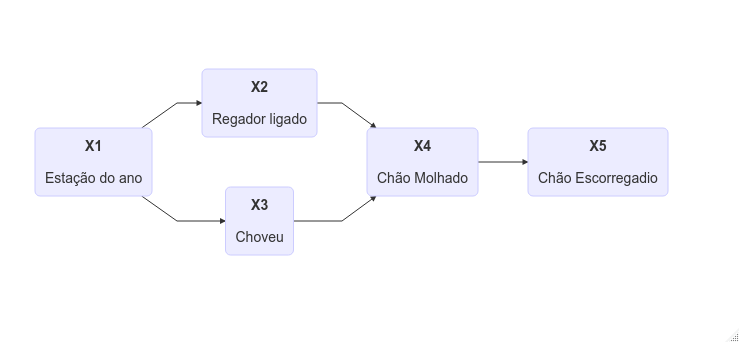

4.1 Monty Hall e diagramas de influência
Autor: Julio
Dificuldade alta
model
Você está num jogo na TV e o apresentador pede para escolher uma entre 3 portas. Atrás de uma dessas portas tem uma Ferrari e nas outras duas temos cabras. Você escolhe uma porta. Depois, o apresentador retira uma porta que tem uma cabra e pergunta: você quer trocar de porta?
A princípio, você pode achar que sua probabilidade de ganhar é 1/2, já que uma das portas foi retirada, então não importa se você troca ou não. Mas a resposta é que sim, vale à pena trocar de porta! A probabilidade de vencer o jogo trocando a porta é de 2/3.
.](https://imgs.xkcd.com/comics/monty_hall.png)
Figura 2.2: Brincadeira do XKCD.
O problema de Monty Hall é talvez o mais eloquente exemplo de como a probabilidade pode confundir a mente humana. Esse problema desafiou a comunidade científica no final do século XX e chegou até a ser considerado um paradoxo. Recomendo ler o livro O Andar do Bêbado, de Leonard Mlodinow, que conta essa e muitas outras histórias interessantes sobre a probabilidade.
Existem várias formas de explicar por quê trocar a porta é a melhor estratégia. A que eu mais gosto é a do próprio Andar do Bêbado, que mostra que, quando você escolhe a primeira porta, você está apostando se acertou ou não a Ferrari. Se você apostar que acertou a Ferrari, não deve trocar a porta e, se você apostar que errou a Ferrari, deve trocar. A aposta de errar a Ferrari de primeira tem probabilidade 2/3, logo, vale à pena trocar.
Nesse post, mostramos uma solução alternativa, simples e elegante para o problema usando diagramas de influência e o pacote bnlearn.
4.1.1 Redes bayesianas
As redes Bayesianas são o resultado da combinação de conceitos probabilísticos e conceitos da teoria dos grafos. Segundo Pearl, tal união tem como consequências três benefícios: i) prover formas convenientes para expressar suposições do modelo; ii) facilitar a representação de funções de probabilidade conjuntas; e iii) facilitar o cálculo eficiente de inferências a partir de observações.
Da teoria de probabilidades precisamos apenas de alguns resultados básicos sobre probabilidade condicional. Primeiramente, pela definição de probabilidade condicional, sabemos que
\[ p(x_1, x_2) = p(x_1)p(x_2|x_1). \]
Aplicando essa regra iterativamente para \(n\) variáveis, temos
\[ p(x_1, \dots, x_p) = \prod_j p(x_j|x_1,\dots, x_{j-1}). \]
Agora, imagine que, no seu problema, a variável aleatória \(X_j\) não dependa probabilisticamente de todas as variáveis \(X_1,\dots, X_{j-1}\), e sim apenas de um subconjunto \(\Pi_j\) dessas variáveis. Fazendo isso, a equação pode ser escrita como
\[ p(x_1, \dots, x_p) = \prod_j p(x_j|\pi_j). \]
Chamamos \(\Pi_j\) de pais de \(X_j\). Esse conjunto pode ser pensado como as variáveis que são suficientes para determinar as probabilidades de \(X_j\).
A parte mais legal das redes Bayesianas é que elas podem ser representadas a partir de DAGs (grafos direcionados acíclicos). No grafo, se \(X_1\) aponta para \(X_2\), então \(X_1\) é pai de \(X_2\). Por exemplo, esse grafo aqui

representa a distribuição de probabilidades \(p(x_1, \dots, x_5)\) com
\[ p(x_1, \dots, x_5) = p(x_1)p(x_2|x_1)p(x_3|x_1)p(x_4|x_3,x_2)p(x_5|x_4). \]
4.1.2 Diagrama de influência
Um diagrama e influências é uma rede Bayesiana com nós de decisão e utilidade (ganhos). Ou seja, é uma junção de três conceitos:
\[ \underbrace{\text{prob. condicional} + \text{grafos}}_{\text{rede Bayesiana}} + \text{teoria da decisão} = \text{diagrama de influência} \]
Na teoria da decisão, usualmente estamos interessados em maximizar a utilidade esperada. No diagrama, considerando a estrutura de probabilidades dada pela rede Bayesiana e as informações disponíveis, queremos escolher a decisão que faz com que, em média, nosso retorno seja mais alto.
Com diagramas de influências, é possível organizar sistemas complexos com múltiplas decisões, considerando diferentes conjuntos de informações disponíveis. É uma ferramenta realmente muito poderosa.
4.1.3 Voltando ao Monty Hall
Agora que sabemos um pouquinho de diagramas de influência, podemos desenhar o do Monty Hall:

O jogador tem duas decisões a tomar:
- \(D_1\) (
escolha_inicial): A escolha da porta inicial (1,2,3). - \(D_2\) (
trocar): Trocar a porta ou não (s,n).
Também temos duas fontes de incerteza:
- \(X_1\) (
ferrari): Em qual porta está a Ferrari (1,2,3). - \(X_2\) (
porta_retirada): Qual porta foi retirada (1,2,3). Essa variável não é sempre aleatória: se eu escolho a porta 1 e a Ferrari está em 2, o apresentador é obrigado a retirar a porta 3. Se o apresentador tiver a opção de escolher (que acontece no caso da escolha inicial ser a Ferrari), o apresentador escolhe uma porta para retirar aleatoriamente.
Finalmente, temos um nó de utilidade:
- \(U_1\) (
result): Ganhei a Ferrari (ganhei,perdi).
Em R, podemos construir a rede Bayesiana do problema utilizando o pacote bnlearn:
FALSE [,1] [,2]
FALSE [1,] "escolha_inicial" "porta_retirada"
FALSE [2,] "ferrari" "porta_retirada"
FALSE [3,] "porta_retirada" "trocar"
FALSE [4,] "trocar" "result"
FALSE [5,] "ferrari" "result"
FALSE [6,] "escolha_inicial" "result"O output desse conjunto de operações é um objeto do tipo bn com várias propriedades pré calculadas pelo pacote bnlearn:
Random/Generated Bayesian network
model:
[escolha_inicial][ferrari][porta_retirada|escolha_inicial:ferrari][trocar|porta_retirada]
[result|escolha_inicial:ferrari:trocar]
nodes: 5
arcs: 6
undirected arcs: 0
directed arcs: 6
average markov blanket size: 3.60
average neighbourhood size: 2.40
average branching factor: 1.20
generation algorithm: Empty Com as especificação do problema dada, se gerarmos aleatoriamente todos os cenários, chegamos à essa combinação de casos equiprováveis (ver Extra 2)
Agora, vamos escrever todas as combinações possíveis de cenários e guardar num data.frame chamado dados:
|escolha_inicial |ferrari |porta_retirada |trocar |result |
|:---------------|:-------|:--------------|:------|:------|
|1 |1 |2 |n |ganhei |
|1 |1 |2 |s |perdi |
|1 |1 |3 |n |ganhei |
|1 |1 |3 |s |perdi |
|1 |2 |3 |n |perdi |
|1 |2 |3 |s |ganhei |
|1 |3 |2 |n |perdi |
|1 |3 |2 |s |ganhei |
|2 |1 |3 |n |perdi |
|2 |1 |3 |s |ganhei |
|2 |2 |1 |n |ganhei |
|2 |2 |1 |s |perdi |
|2 |2 |3 |n |ganhei |
|2 |2 |3 |s |perdi |
|2 |3 |1 |n |perdi |
|2 |3 |1 |s |ganhei |
|3 |1 |2 |n |perdi |
|3 |1 |2 |s |ganhei |
|3 |2 |1 |n |perdi |
|3 |2 |1 |s |ganhei |
|3 |3 |2 |n |ganhei |
|3 |3 |2 |s |perdi |
|3 |3 |1 |n |ganhei |
|3 |3 |1 |s |perdi |Finalmente, ajustamos nossa rede Bayesiana, usando a função bnlearn::bn.fit().
A função bnlearn::cpquery() (conditional probability query) serve para realizar uma consulta de probabilidades dada a rede ajustada. No nosso caso, a partir de uma escolha inicial qualquer \(d_1\), queremos saber o ganho ao trocar é maior que o ganho ao não trocar.
\[ \mathbb E(U_1\; |\; D_2 = \text{s}, D_1 = d_1) > \mathbb E(U_1\; |\; D_2 = \text{n}, D_1 = d_1). \]
Fazendo contas, isso equivale matematicamente a consultar se
\[ \mathbb P(U_1=\text{ganhei}\; |\; D_2 = \text{s}) > \mathbb P(U_1=\text{ganhei}\; |\; D_2 = \text{n}) \]
Agora, podemos consultar \(\mathbb P(U_1=\text{ganhei}\; |\; D_2 = \text{s})\) com nosso modelo!
[1] 0.6666704E não é que dá 2/3 mesmo? Da mesma forma, temos
[1] 0.3333187Resolvido!
4.1.4 Wrap-up
- Vale à pena trocar a porta!
- Redes Bayesianas juntam grafos e probabilidades condicionais
- Diagramas de influência juntam redes Bayesianas e teoria da decisão
- Essas ferramentas podem ser utilizadas tanto para resolver Monty Hall quanto para ajudar em sistemas complexos.
É isso pessoal. Happy coding ;)
4.1.5 Extra
Se você ficou interessado(a) em como eu fiz o diagrama, utilizei o pacote DiagrammeR. O código está aqui:
4.1.6 Extra 2
É possível simular os dados que coloquei no post com uma função simples, que adicionei abaixo. Na verdade, o fato de eu ter considerado somente as combinações únicas de cenários e não os dados simulados abaixo é um pouco roubado, e só funciona porque os cenários calham de ser, de fato, equiprováveis.
Observations: 10,000
Variables: 5
$ escolha_inicial <fct> 3, 1, 2, 1, 1, 1, 3, 1, 2, 3, 3, 1, 3, 1, 2, 2, 2,...
$ ferrari <fct> 1, 1, 2, 1, 1, 2, 3, 3, 1, 2, 3, 3, 2, 1, 1, 3, 1,...
$ porta_retirada <fct> 2, 3, 1, 3, 2, 3, 2, 2, 3, 1, 1, 2, 1, 2, 3, 1, 3,...
$ trocar <fct> n, s, s, n, s, n, n, n, n, s, s, s, s, n, n, s, n,...
$ result <fct> perdi, perdi, perdi, ganhei, perdi, perdi, ganhei,...Os dados do post podem ser obtidos fazendo isso aqui:
Agradecimentos: Rafael Stern, que me convenceu de que vale √† pena mostrar os dados simulados üòâ